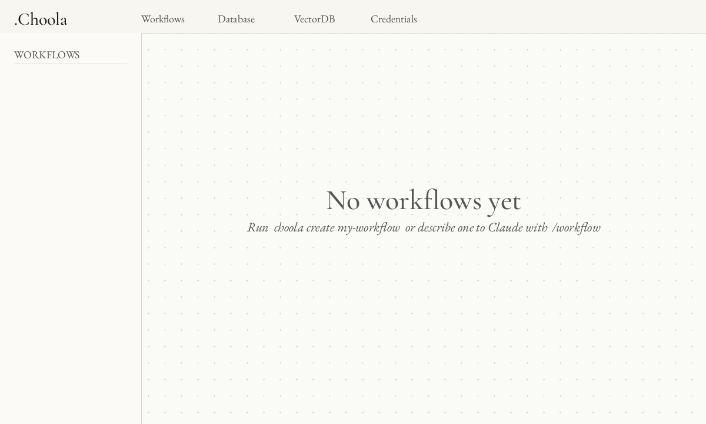
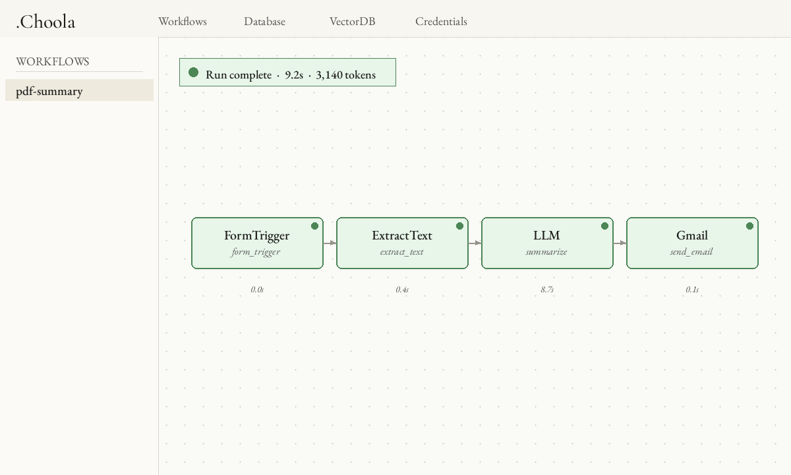

Summarize a PDF and email yourself the result
This walkthrough builds a four-node Choola workflow end to end: a form that accepts a PDF upload, a node that pulls plain text out of it, a Claude call that summarizes the text, and a Gmail node that sends the summary to your inbox. By the end you'll have something you can drop a paper into and get a one-paragraph summary back in about ten seconds.
It assumes you've already run pip install choola and have an Anthropic API key and Gmail credential ready to register.
1. Initialize the project
mkdir pdf-summary && cd pdf-summary
choola init
choola start # editor opens at http://localhost:5000choola init creates workflows/, choola.db, and a .claude/ directory with pre-approved slash commands. Leave the editor running in one terminal; you'll use a second one for the rest of the commands.

choola start — no workflows yet.2. Register your credentials
From the second terminal:
choola credential anthropic-key # paste your Anthropic API key
choola credential gmail # walks you through the OAuth2 flowCredentials are stored encrypted in choola.db and accessed inside nodes via await self.get_credential("name") — never as environment variables, never hardcoded.
3. Scaffold the workflow with Claude Code
The fastest path is to describe the workflow to Claude Code (either in the editor's built-in terminal pane or in your own):
/workflow build a workflow called pdf-summary that:
- starts from a form with a PDF file upload field
- extracts plain text from the uploaded PDF
- summarizes the text with Claude in one paragraph
- emails the summary to me via GmailClaude reads the framework rules, scaffolds the folder, and writes one node per step. The result is a directory like:
workflows/pdf-summary/
├── topology.json
├── files/
├── evaluations/
└── nodes/
├── __init__.py
├── form_trigger.py # next_nodes=["extract_text"]
├── extract_text.py # next_nodes=["summarize"]
├── summarize.py # next_nodes=["send_email"]
└── send_email.py # next_nodes=[]If you'd rather see the nodes first, the rest of this page walks through them as you'd hand-write them.
4. The four nodes
form_trigger.py
Choola's FormTrigger base class renders an HTML form and starts the workflow on submit. Each declared field becomes a key in the outgoing payload.
from choola.nodes import FormTrigger
class PDFForm(FormTrigger):
"""Accept a PDF upload and kick off the summary workflow.
@cost: free
"""
node_id = "form_trigger"
next_nodes = ["extract_text"]
title = "Summarize a PDF"
fields = [
{"name": "pdf", "type": "file", "accept": ".pdf", "required": True},
]extract_text.py
Pull the bytes off the upload, run pypdf over them, and pass the text downstream. No LLM call here — it's deterministic and free.
from io import BytesIO
from pypdf import PdfReader
from choola.nodes import BaseNode
class ExtractText(BaseNode):
"""Read the uploaded PDF and emit its plain text.
@cost: free
"""
node_id = "extract_text"
next_nodes = ["summarize"]
async def execute(self, payload, context):
pdf_bytes = payload["pdf"]["bytes"]
reader = PdfReader(BytesIO(pdf_bytes))
text = "\n\n".join(page.extract_text() or "" for page in reader.pages)
return {"text": text, "filename": payload["pdf"]["filename"]}summarize.py
The LLM base node handles the Claude/Gemini API call, interpolation, and token reporting for you. You declare the prompt template and the model; the engine takes care of the rest, including feeding token counts to the per-run and per-hour circuit breakers.
from choola.nodes import LLM
class Summarize(LLM):
"""One-paragraph summary of the extracted PDF text.
@cost: paid-one-shot
"""
node_id = "summarize"
next_nodes = ["send_email"]
credential = "anthropic-key"
model = "claude-haiku-4-5"
prompt = """\
Summarize the following document in one tight paragraph (≤120 words).
Focus on the main claim, the evidence, and the conclusion.
---
{text}
---
"""
async def post_process(self, response, payload, context):
return {"summary": response.strip(), "filename": payload["filename"]}send_email.py
The Gmail base node uses the credential you registered earlier. The subject and body use Python's standard str.format on the incoming payload.
from choola.nodes import Gmail
class SendEmail(Gmail):
"""Email the summary to the workflow owner.
@cost: paid-per-call
"""
node_id = "send_email"
next_nodes = []
credential = "gmail"
to = "me"
subject = "Summary: {filename}"
body = "{summary}"5. Run it
From the editor, click pdf-summary in the sidebar, then Run. The form trigger renders as a page; drop a PDF in and submit. The canvas lights up node-by-node as execution streams.

To run from the CLI instead (handy for replay during debugging):
choola run pdf-summary --payload '{"pdf_path": "papers/attention.pdf"}'6. When it breaks: read the evaluation, replay the broken node
Every run writes a JSON evaluation to workflows/pdf-summary/evaluations/<run_id>.json with the input, output, status, duration, and token counts for each node. When a node errors, its "status" is "ERROR" and the entry includes the full traceback.
The fix loop is two steps:
# 1. point Claude Code at the failing run
/debug pdf-summary
# 2. after editing the node, re-run just that node against its saved input
choola replay pdf-summary <run_id> extract_textReplay does not re-issue the upstream LLM call — that's the whole point. You iterate on the broken node for free while the rest of the pipeline stays frozen.
What to try next
- Swap
LLMforLLMLon a classification step (e.g. "is this paper about ML?") and runchoola dreamafter a few invocations to graduate it to a free local XGBoost classifier. - Branch after
extract_text: one branch summarizes, another extracts the bibliography, and a merge node emails both in a single message. - Expose the workflow as an MCP tool. With the editor running, any MCP-aware client can call it at
POST http://localhost:5000/mcp— no UI scraping required.